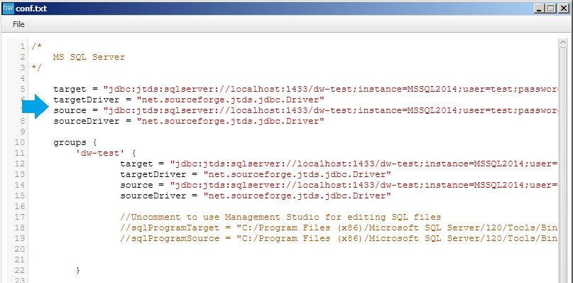
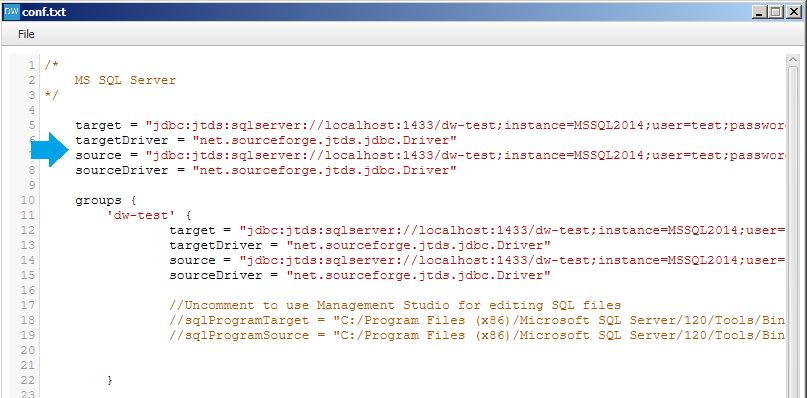

Welcome to DW Test Toolkit.
The Data Warehouse Test Toolkit is made to assists you when testing a Data Warehouse to ensure the quality. The toolkit lets you write queries for source and target systems and compare the results for you and report any differences.
Download/install
Download the latest version, and extract the zip file to your prefered destination.
Java (Oracle)version 8 update 40 or higher is required to run the toolkit. jTds (MS SQL Server) and Oracle JDBC driver are provided in the distribution.
Run
Navigate to the bin folder, and type
dw-test.bat --gui
To setup connections to source and target databases right click anywhere in the table view.
select Settings->Open file.
 Edit the connection string to match your requirements. Save your settings by clicking Save button, and close the window.

Settings are read on startup, when you click the Save button, and when Reload menu item is clicked.
Edit the connection string to match your requirements. Save your settings by clicking Save button, and close the window.

Settings are read on startup, when you click the Save button, and when Reload menu item is clicked.
Windows Authentication
To use Windows Authentication with MS SQL Server leave out user and password from connection string
and download jTDS from https://sourceforge.net/projects/jtds/
extract the zip file and put the directory in PATH (environment variable). For example C:\jtds-1.3.1-dist\x64\SSO
Testcase example
Create your first test case select New testcase, and enter name.
 This will create a file in
This will create a file in  Type in a query, click the Save button and close the window.
Type in a query, click the Save button and close the window.
 Create a source query by clicking Code->Open/create source SQL. The file is saved
at
Create a source query by clicking Code->Open/create source SQL. The file is saved
at  Write a similar query to match the target query. The query will be executed using the source connection.
Write a similar query to match the target query. The query will be executed using the source connection.
Execute Queries
To Execute the test case right click and select Execute on the test case. Both target and source queries are executed.
Both target and source queries are executed.
Results
Result of queries it put in subfolder /Result in Target and Source folder holding the .sql files. To view the results select Results->Open target data set for example. This will open the .csv file with your preferred .csv editor.
Modify the csvReader in the settings file (Setting->Open file).
This will open the .csv file with your preferred .csv editor.
Modify the csvReader in the settings file (Setting->Open file).
To use Excel for example:
csvReader = "C:/Program Files (x86)/Microsoft Office/Office14/excel.exe /e"
Callbacks
Before and After callback can be created to be executed before/after a target query is run.. This can be used to start ETL programs etc. The callback file accepts any .bat script code.
Scripts
To automate the creation of test cases scripts can be used. In the directory bin/Scripts of the install directory
groovy scripts can be placed. A model object is passed to the script at execution time. The model contains information of mapping between source and target databases provided by model.csv file.
Here is a illustration of the model.
 To execute a script go to Code->Scripts->Run [script name].groovy
To execute a script go to Code->Scripts->Run [script name].groovy
See the scripts in the distribution for examples.